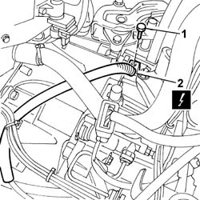
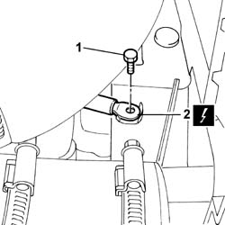

5505A38 POWER UNIT/BODY EARTH WIRE - R+R
- Path
- Procedures > 55 ELECTRICAL EQUIPMENT > 5505 INSTRUMENT/GAUGE ELECTRICAL CIRCUITS > 5505A MULTI-FUNCTION COMPONENTS > 5505A38 POWER UNIT/BODY EARTH WIRE - R+R
- Kind
- repair procedure (removal / refitting; the operation number is the code)
- Applies to
- all engines; all production periods
- Interactive page
- https://sloeber94.github.io/elrnDB-fUlss/en/#/179007524
Applies to: all engines; all production periods
 Removing
Removing
 Refitting
RefittingOp. 5530B56 BATTERY DRIP TRAY COVER - R.R.
- Disconnect the negative battery terminal.
- Position the vehicle on a lift.
Op. 5010B18 CLIMATE CONTROL UNIT AIR INTAKE - R.R.
Op. 1048A10 AIR CLEANER FILTERING ELEMENT - REPLACE
1. Undo the retaining bolt.
2. Disconnect the earth lead from the power unit.

Applies to: all engines; all production periods
- Raise the vehicle.
Op. 7055B54 UNDER-ENGINE GUARD - R R
1. Undo the retaining bolt.
2. Disconnect the earth lead from the front strut.
- Release the earth lead from the retaining bands and remove it.

Applies to: all engines; all production periods
Refitting
Removing- Position the earth lead.
- Tighten the bolt fixed to the front strut.
Op. 7055B54 UNDER-ENGINE GUARD - R R
- Lower the vehicle.
- Tighten the bolt fixed to the power unit.
- Secure the wiring using suitable bands.
Op. 1048A10 AIR CLEANER FILTERING ELEMENT - REPLACE
Op. 5010B18 CLIMATE CONTROL UNIT AIR INTAKE - R.R.
- Remove the vehicle from the lift.
- Connect the negative battery terminal.